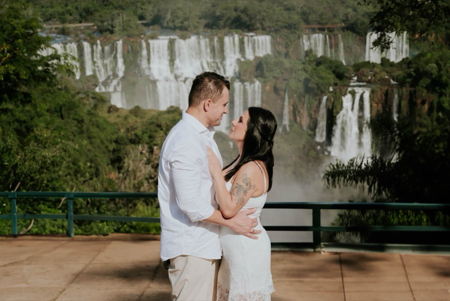
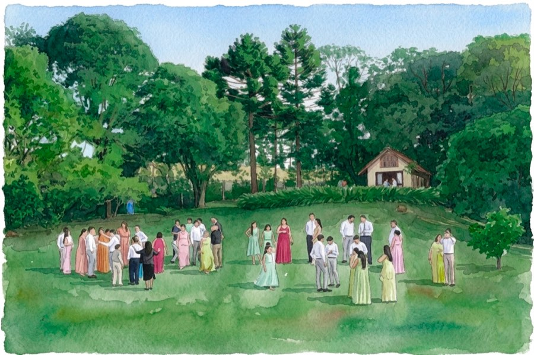
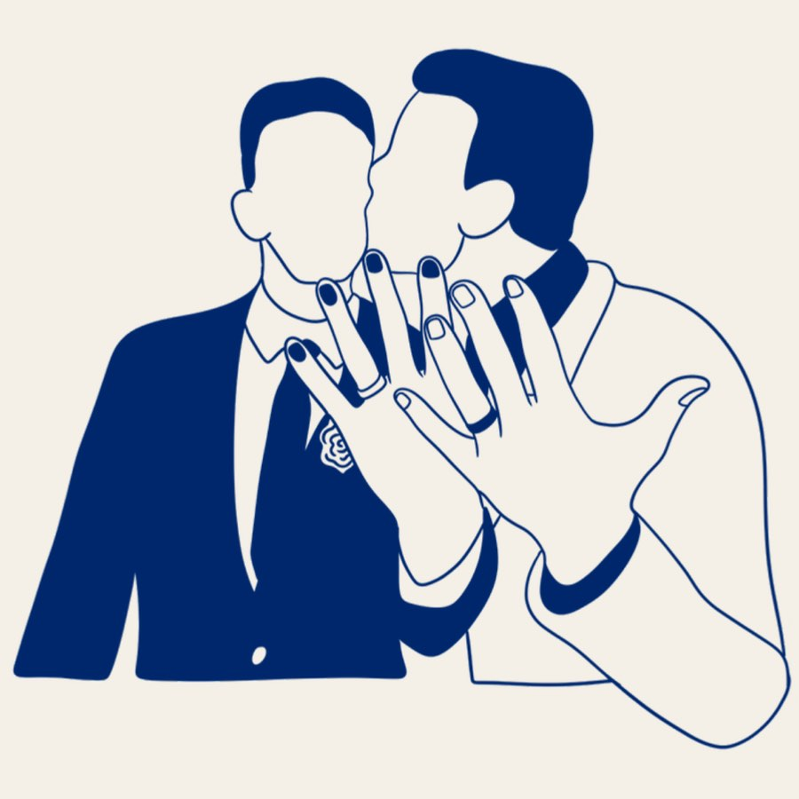
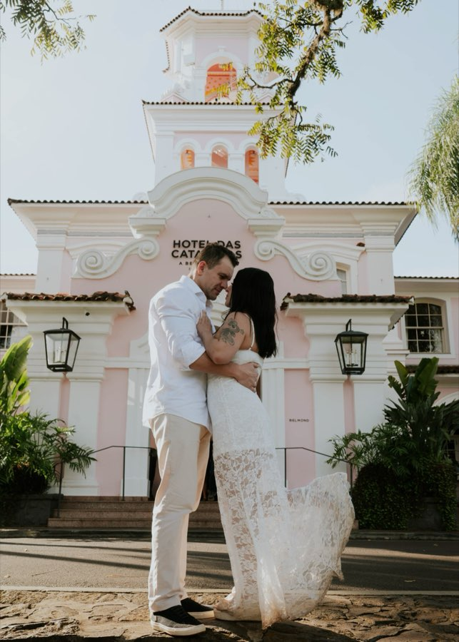

RSVP, lista de presentes com Pix copia-e-cola e painel pra vocês gerenciarem tudo sozinhos. Feito à mão, não em template genérico.
Fazer meu site Conversa direto no WhatsApp, sem formulário.

Três estilos, dois deles no ar agora. O de vocês é o quarto.
Em junho de 2026 eu casei com o Bruno. Nenhuma plataforma dava o que a gente queria — então construí o nosso do zero, do jeito que a gente imaginou. Quando ficou pronto, começaram a perguntar quem tinha feito. O primeiro casal que perguntou virou o primeiro cliente. É esse serviço aqui.

06 de junho de 2026 · Espaço Eccos, Campo Largo/PR. Ilustração em aquarela, azul-marinho, cronograma hora a hora.
ver o site →
10 de outubro de 2026 · Curitiba/PR. RSVP em banco, lista de presentes com Pix sem taxa e painel — tudo no ar agora.
ver o site →Vocês já escolheram fotógrafo, cerimonial e buffet pensando em cada detalhe. O site que vai representar esse dia pra quem não puder ir também merece isso.
Cores, fotos, textos e história de vocês — não um template que qualquer casal também está usando.
Pix copia-e-cola gerado direto, sem gateway. Ninguém paga taxa — nem vocês, nem quem presenteia.
Painel simples pra editar presentes, ver quem confirmou presença e exportar a lista — sem precisar me chamar toda vez.
A taxa existe de todo jeito. A única escolha que as plataformas dão é quem paga por ela: vocês ou seus convidados.
Aqui não tem taxa pra ninguém pagar. O Pix é gerado direto no site, sem gateway no meio.| Num presente de R$ 300 | Vocês recebem | O convidado paga |
|---|---|---|
| Plataforma, com vocês absorvendo a taxa | R$ 288,33 | R$ 300,00 |
| Plataforma, repassando a taxa ao convidado | R$ 300,00 | R$ 311,67 |
| casamentos.app | R$ 300,00 | R$ 300,00 |
Cálculo sobre 3,89% — tarifa de entrada do iCasei (regressiva até 3,69%), tarifa única do Casar.com e tarifa do plano gratuito do Lejour, consultadas em julho de 2026. Numa lista que arrecada R$ 15.000, são R$ 583,50 que ficam com vocês.
O estilo muda a cara. As funções — RSVP, Pix e painel — são as mesmas em qualquer um deles.
O maior presente será celebrar esse momento ao lado de quem amamos.
R$ 310,00
Sem gateway, sem taxa — 100% cai na conta dos noivos.
Por favor, confirme até 10 de setembro.
| Código | Nome | Confirmação | Data |
|---|---|---|---|
| MD-2026 | Ana Beatriz Ribeiro | Sim | 18/07 |
| MD-1180 | Rafael Moreira | Sim | 18/07 |
| MD-0742 | Juliana Nakamura | Não | 17/07 |
| MD-0559 | Pedro Henrique Alves | Sim | 17/07 |
Nomes, data, local, fotos e o que vocês querem no site. Uns 10 minutos no WhatsApp.
Site pronto pra revisão em poucos dias. Vocês olham, pedem ajuste, eu ajusto.
Vocês compartilham o link, gerenciam presentes e RSVP pelo painel.
Não tem tabela pronta porque não tem site pronto: o valor depende de quantas seções vocês querem, se vai domínio próprio, se vai lista de presentes, se vai galeria. Em cerca de 10 minutos no WhatsApp a gente fecha o escopo e o valor. Sem proposta de 12 páginas, sem reunião de uma hora.
Pedir meu orçamento Resposta no mesmo dia, normalmente em algumas horas.Poucos dias depois da nossa conversa inicial. Casamento tem data marcada — o site respeita isso. Vocês recebem uma versão pra revisar antes de ir ao ar.
O orçamento é fechado sob medida, porque o escopo varia bastante: número de seções, domínio próprio, lista de presentes, galeria. A conversa inicial leva cerca de 10 minutos e vocês saem dela com o valor fechado — sem surpresa depois.
Não. O painel foi feito pra quem não é técnico: editar presentes, ver quem confirmou presença e exportar a lista, tudo em telas simples.
Sim. O código Pix (BR Code) é gerado direto no site, sem gateway de pagamento no meio. O convidado paga, o valor cai integral na conta de vocês. 100%, sem desconto.
Deixam — e é justamente aí que está o problema. A taxa de cerca de 3,89% existe de qualquer forma; a plataforma só te dá a escolha de quem absorve ela. Se vocês absorvem, um presente de R$ 300 chega como R$ 288,33. Se repassam, o convidado paga R$ 311,67 pelo mesmo presente. Aqui não existe essa escolha porque não existe a taxa: os R$ 300 saem da conta do convidado e entram inteiros na de vocês.
Não. Dois deles nem são estilo: são sites de verdade, no ar, e vocês podem clicar e conferir. O marsala é o do Marcus & Daíse; o marinho é o do meu casamento com o Bruno, com ilustração em aquarela no lugar de foto. O minimal é só um exemplo, pra mostrar até onde a cara do site pode mudar. O de vocês é montado a partir das suas cores, suas fotos e sua história.
Pequenas edições de texto e foto estão inclusas nos primeiros 30 dias após a entrega, sem custo. Depois disso, ajustes entram na assinatura de hospedagem opcional.